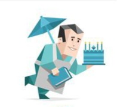

ESFJ : شخصية القنصل

شخصية اجتماعية ، حسية ، عاطفية، حازمة
عادة ما يتم وصفهم بأنهم مجتمعيون، لديهم طريقة لتشجيع الآخرين ليكونوا في أفضل حالاتهم وغالبًا ما يجدون صعوبة في تصديق أي شيء سيئ عن الأشخاص المقربين منهم، يميل الأشخاص الذين يتمتعون بنوع شخصية القنصل إلى أن يكونوا منفتحين ومخلصين ومنظمين وحنونين
أشخاص يهتمون بالآخرين بشكل غير عادي ، اجتماعيون و شعبيون ، و حريصون على مساعدة الغير دائما
نقاط القوة
- عملي ويتحمل المسؤولية
- متفائل ومحبوب من الجميع
- تقليدي ويحب الإبقاء على قوة العلاقات الأسرية
- لديها خطط عمل جيدة ومدعومة
- طيب القلب ومتعاطف
- يعيش في الحاضر، يكره التنظير والتكهن بالمستقبل
- متعاون جداً، عضو فريق فعال
كيف يراك الناس
نقاط الضعف
- قد يصبح مهووساً بمعرفة نظرة الناس له
- لا يولي إهتماماً بإحتياجاته الخاصة، وغالباً ما يضحي بنفسه
- قد يستخدم اسلوب إشعار الآخرين بالذنب للتلاعب بهم وأخذ منهم مايريده
ESFJ كأب و أم
متحمسين لكل جوانب الأمومة و الأبوة لرعاية أطفالهم لكن هناك جانب سلبي ، هو عدم معاقبة أطفالهم مباشرة ، و ربما من الصعب عليهم رؤية أخطائهم ، يحمون أطفالهم بشكل كبير ، و يقفون ضد أي شخص يحاول إيذائهم
ESFJ كطالب
رئيس الفصل لديه دائرة واسعة من الاصدقاء والشخصية الساحرة التي يحبها الجميع
نسبـة esfj في العالم : 12%